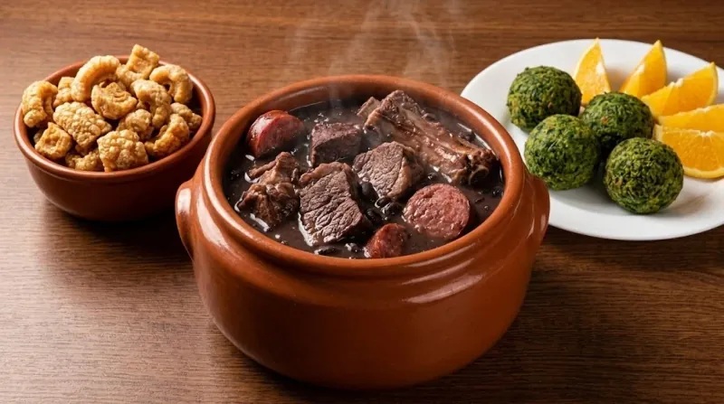
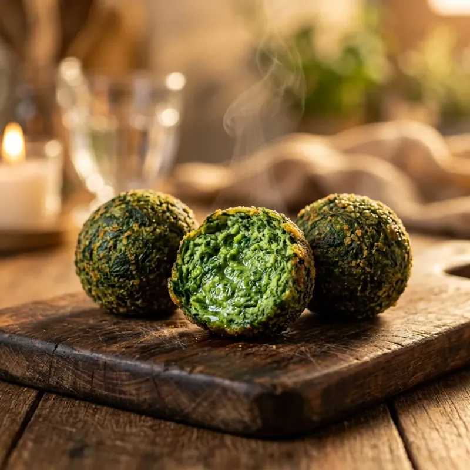
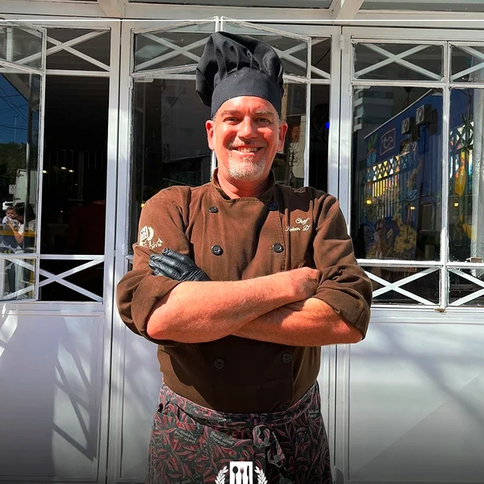
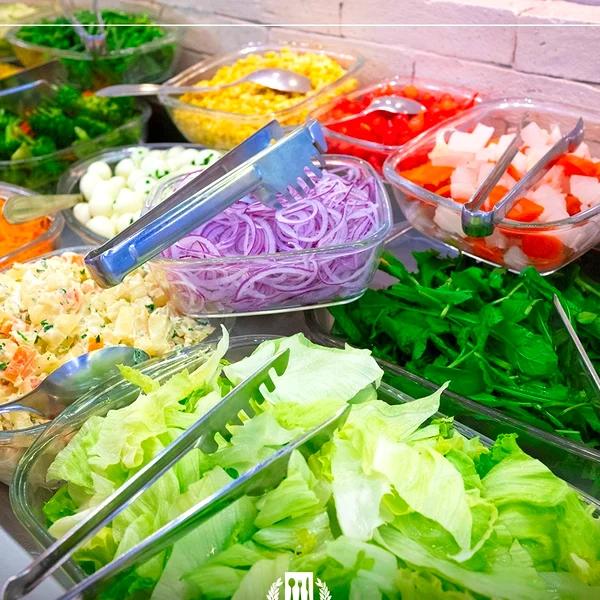
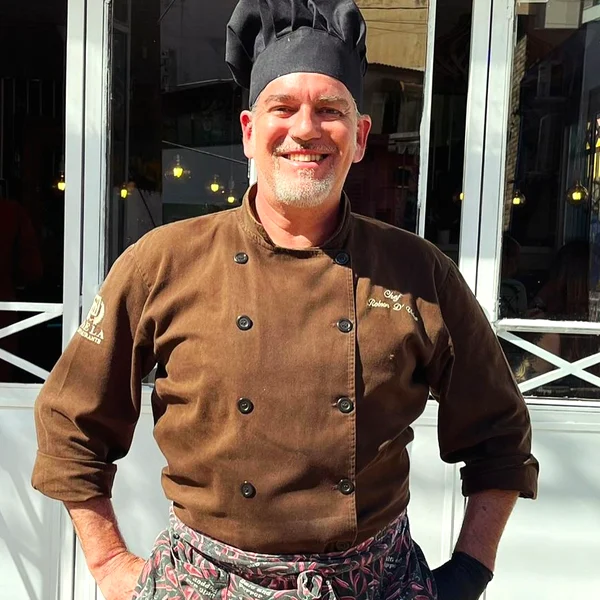
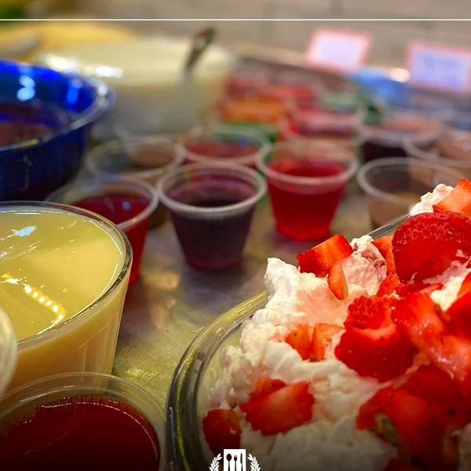

Recipe note
"Mais uma vez indo ao Mirolo, dessa vez na unidade antiga. Muito bom como sempre e o merengue e o mousse de chocolate cortesia dão o toque especial."- João Vitor Malafaia (Local Guide)


"O bolinho de espinafre e o merengue de morango... são incríveis." — Kelly Petrussi (Local Guide no Google)




"Mais uma vez indo ao Mirolo, dessa vez na unidade antiga. Muito bom como sempre e o merengue e o mousse de chocolate cortesia dão o toque especial."- João Vitor Malafaia (Local Guide)
"SENSACIONAL!!! Almoço lá sempre, comida de primeira, atendimento excelente, limpeza e organização sem igual, eu amo esse lugar, o bolinho de espinafre e o merengue de morango... são incríveis."- Kelly Petrussi (Local Guide)
"Sem dúvidas meu self-service favorito do mundo! A família está sempre presente, muito simpáticos, sorridentes, atendimento dos demais funcionários também é impecável. A comida é incrível, o buffet de saladas com muita variedade."- Maria Fernanda Lisauskas